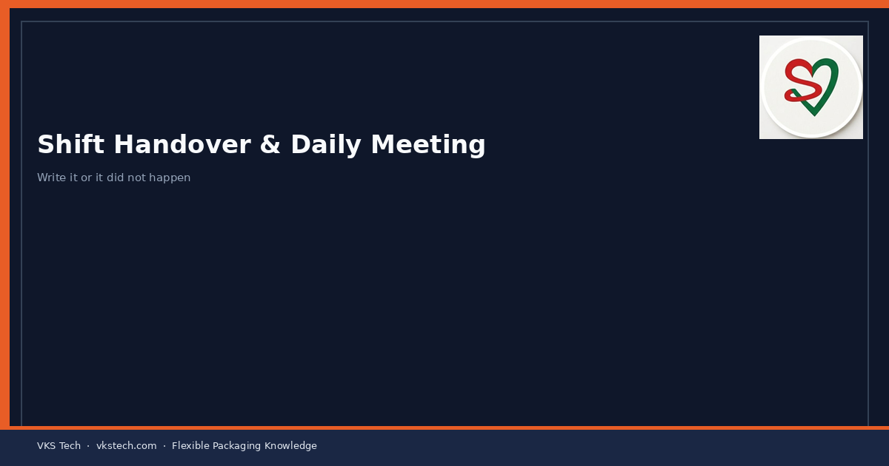
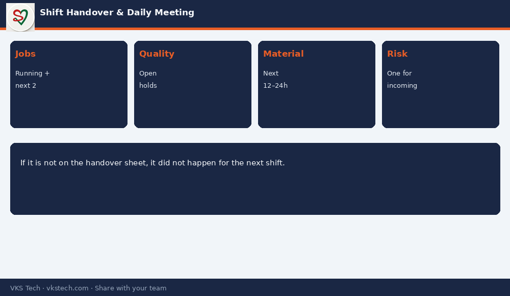

📋 Most “Mystery” Problems on the Next Shift Were Known on the Previous Shift — and Never Written Down.
📖 9-min read · Shop-floor management · Supervisors + PPC
A 5-minute structured handover beats a 30-minute blame meeting later. Daily production meetings should review only exceptions: safety, quality holds, material shortages, capacity risk for the next 24 hours — not every routine number.
📌 Handover Minimum
- Running jobs + next 2 jobs on each critical machine
- Open quality holds and what was already tried
- Material short for next 12–24 hours
- Machine issues (not “OK” — specific noise, tension, registration)
- One risk for the incoming shift

💡 Rule: If it is not on the handover sheet, it did not happen for the next shift.
📋 अगली शिफ्ट की ज्यादातर “रहस्यमय” समस्याएँ पिछली शिफ्ट को पता थीं — और कभी लिखी नहीं गईं।
📖 9-मिनट पढ़ें · शॉप-फ्लोर प्रबंधन
💡 नियम: अगर हैंडओवर शीट पर नहीं है — अगली शिफ्ट के लिए वह हुआ ही नहीं।